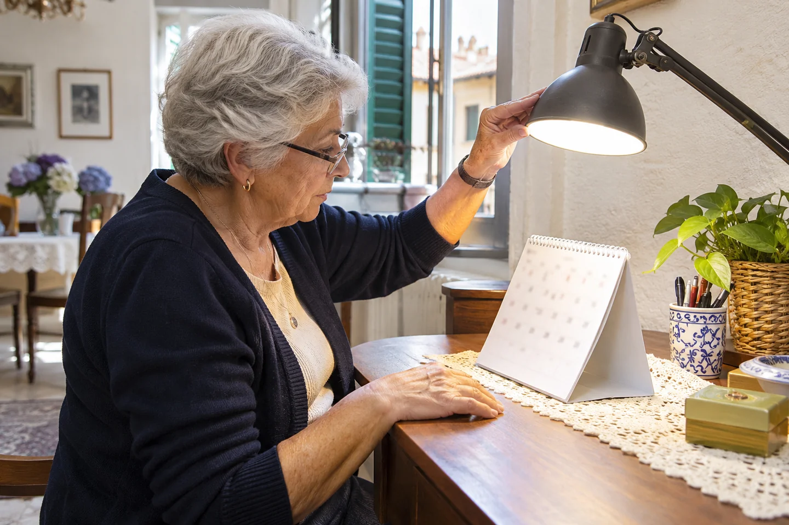

Casa e autonomia quotidiana
Fonti controllate il .
Due guide gratuite per rendere più leggibili gli spazi di casa e sapere come prepararsi a una perdita d’acqua.

Da dove vuoi cominciare?
Leggere e trovare gli oggetti di tutti i giorni
Prova una luce diversa e qualche etichetta leggibile usando quello che hai in casa.
Prepararti a una perdita d’acqua
Individua le valvole quando è tutto asciutto e tieni a portata di mano i riferimenti per chiedere aiuto.
Guide collegate
Se stai organizzando un rientro dopo un ricovero, consulta la guida al ritorno a casa. Per i documenti e gli accordi d’affitto trovi la guida alle locazioni abitative.
Nell’app Per Me puoi leggere i testi anche offline dopo un aggiornamento online riuscito. Tieni una copia su carta dei recapiti domestici che vuoi avere a disposizione.
Fonti
Segui Per Me Guide su Facebook
Per una domanda sulla guida, indica il titolo. Tieni privati indirizzi, recapiti e documenti.